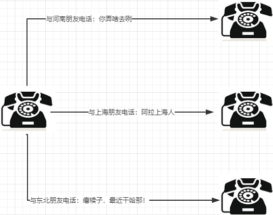
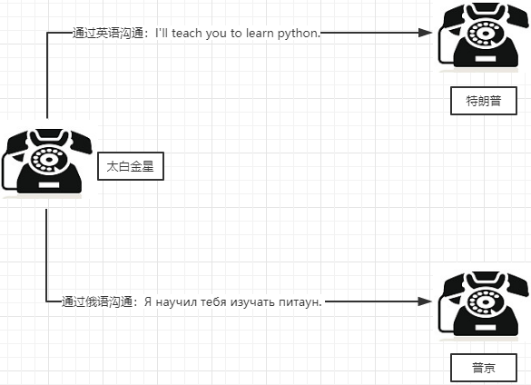
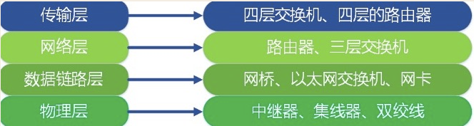
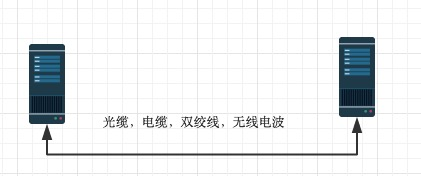
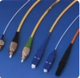
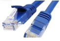
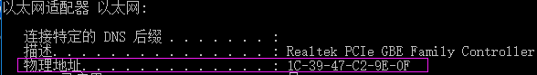
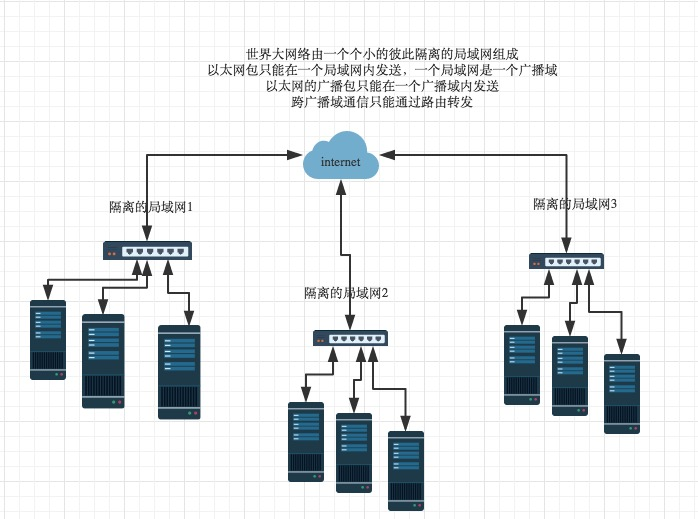
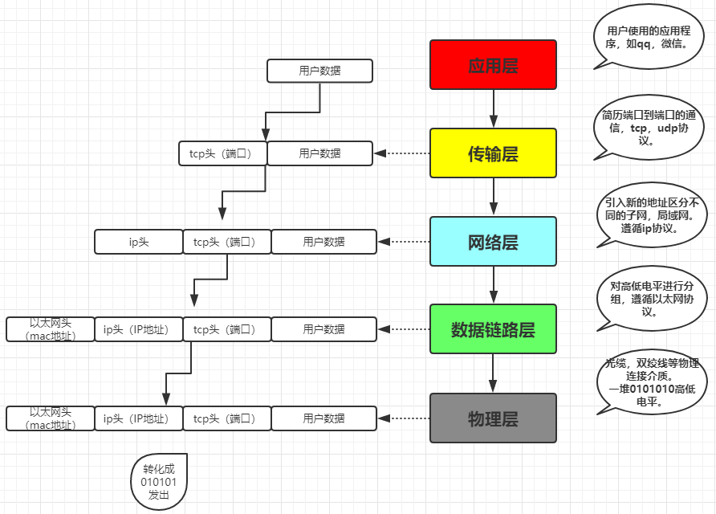
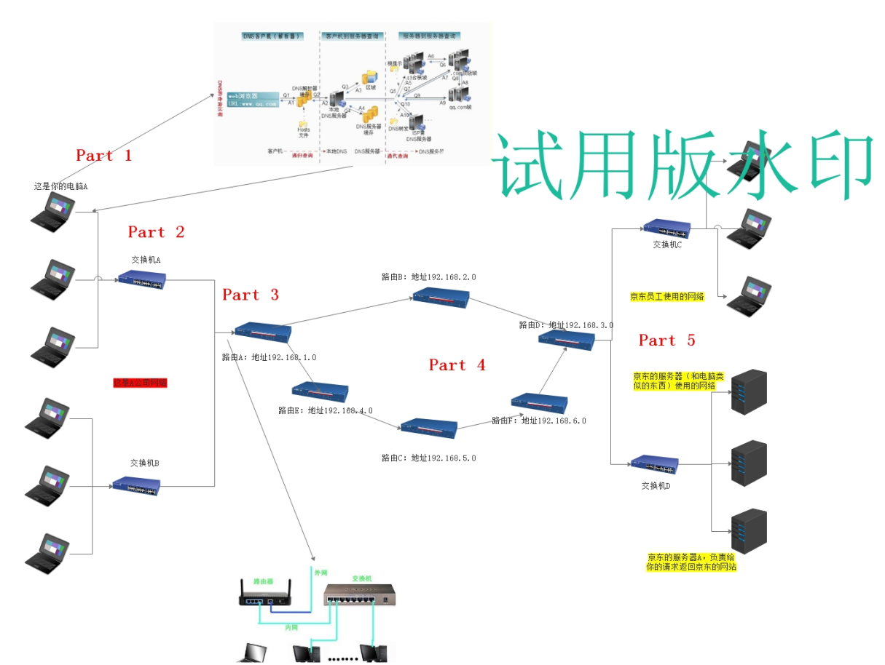

原文连接:https://www.cnblogs.com/changxin7/p/11345632.html
一 互联网的本质
咱们先不说互联网是如何通信的(发送数据，文件等)，先用一个经典的例子，给大家说明什么是互联网通信。
现在追溯到八九十年代，当时电话刚刚兴起，还没有手机的概念，只是有线电话，那么此时你要是给在外地的人打电话，你应该怎么做？
首先你要确保你们两个的座机要有一堆连接介质连接（电话线，转换器等等）咱们统称物理连接介质。
其次，你要拨号，锁定对方的电话。
最后就开始通话了。
通话是有学问的，当时那个年代还没有推广普通话，所以你要是和河南的人电话联系，你要讲河南话。
你要是和东北的人电话联系，你要讲东北话。
你要是和上海的人联系你要讲上海话。

如果你要是有广西，内蒙，唐山，山东等等等等的朋友，你要是打电话是否都要学习当地的方言才能沟通呢？
其实不是，而是咱们推广了普通话，这样只要大家都会说普通话，这样就可以建立良好的通信。
那如果是与特朗普和普京通电话呢？

那你还要学各个国家的语言么？ No！No! No! 咱们现在国际上交流通用语言就是英语，其实咱们把英语学会了，就可以与各个国家的人交流了。这两个例子说明了什么？说明了咱们要统一标准，都遵循一个标准的话，就可以建立良好的通信。
两台计算机之间的通信与两个人打电话原理是一样的。
1，首先要通过各种物理连接介质连接。
2，找准确确定对方计算机（准确到软件）的位置。
3，通过统一的标准（一揽子协议）进行数据的收发。
物理连接介质，这个是网络工程师所考虑的，后面也会给大家简单的讲到，咱们主要就是学习这统一的标准。
英语成为世界上所有人通信的统一标准，如果把计算机看成分布于世界各地的人，那么连接两台计算机之间的internet实际上就是
一系列统一的标准，这些标准称之为互联网协议，互联网的本质就是一系列的协议，总称为‘互联网协议’（Internet Protocol Suite).
互联网协议的功能：定义计算机如何接入internet，以及接入internet的计算机通信的标准。
二 osi七层协议
互联网协议按照功能不同分为osi七层或tcp/ip五层或tcp/ip四层

每层运行常见的物理设备

我们将应用层，表示层，会话层并作应用层，从tcp／ip五层协议的角度来阐述每层的由来与功能，搞清楚了每层的主要协议
就理解了整个互联网通信的原理。
首先，用户感知到的只是最上面一层应用层，自上而下每层都依赖于下一层，所以我们从最下一层开始切入，比较好理解
每层都运行特定的协议，越往上越靠近用户，越往下越靠近硬件
2.1物理层
物理层由来：上面提到，孤立的计算机之间要想一起玩，就必须接入internet，言外之意就是计算机之间必须完成组网

物理层功能：主要是基于电器特性发送高低电压(电信号)，高电压对应数字1，低电压对应数字0
光纤： 双绞线：
 
2.2数据链路层
数据链路层由来：单纯的电信号0和1没有任何意义，必须规定电信号多少位一组，每组什么意思
数据链路层的功能：定义了电信号的分组方式
以太网协议：
早期的时候各个公司都有自己的分组方式，后来形成了统一的标准，即以太网协议ethernet
ethernet规定
- 一组电信号构成一个数据豹，叫做‘帧’
- 每一数据帧分成：报头head和数据data两部分
| head | data |
|---|---|
head包含：(固定18个字节)
- 发送者／源地址，6个字节
- 接收者／目标地址，6个字节
- 数据类型，6个字节
data包含：(最短46字节，最长1500字节)
- 数据包的具体内容
head长度＋data长度＝最短64字节，最长1518字节，超过最大限制就分片发送
mac地址：
head中包含的源和目标地址由来：ethernet规定接入internet的设备都必须具备网卡，发送端和接收端的地址便是指网卡的地址，即mac地址
mac地址：每块网卡出厂时都被烧制上一个世界唯一的mac地址，长度为48位2进制，通常由12位16进制数表示（前六位是厂商编号，后六位是流水线号）

广播：
有了mac地址，同一网络内的两台主机就可以通信了（一台主机通过arp协议获取另外一台主机的mac地址）
ethernet采用最原始的方式，广播的方式进行通信，即计算机通信基本靠吼

2.3 网络层
网络层由来：有了ethernet、mac地址、广播的发送方式，世界上的计算机就可以彼此通信了，问题是世界范围的互联网是由
一个个彼此隔离的小的局域网组成的，那么如果所有的通信都采用以太网的广播方式，那么一台机器发送的包全世界都会收到，
这就不仅仅是效率低的问题了，这会是一种灾难

上图结论：必须找出一种方法来区分哪些计算机属于同一广播域，哪些不是，如果是就采用广播的方式发送，如果不是，
就采用路由的方式（向不同广播域／子网分发数据包），mac地址是无法区分的，它只跟厂商有关
网络层功能：引入一套新的地址用来区分不同的广播域／子网，这套地址即网络地址
IP协议：
- 规定网络地址的协议叫ip协议，它定义的地址称之为ip地址，广泛采用的v4版本即ipv4，它规定网络地址由32位2进制表示
- 范围0.0.0.0-255.255.255.255
- 一个ip地址通常写成四段十进制数，例：172.16.10.1
ip地址分成两部分
- 网络部分：标识子网
- 主机部分：标识主机
注意：单纯的ip地址段只是标识了ip地址的种类，从网络部分或主机部分都无法辨识一个ip所处的子网
例：172.16.10.1与172.16.10.2并不能确定二者处于同一子网
子网掩码
所谓”子网掩码”，就是表示子网络特征的一个参数。它在形式上等同于IP地址，也是一个32位二进制数字，它的网络部分全部为1，主机部分全部为0。比如，IP地址172.16.10.1，如果已知网络部分是前24位，主机部分是后8位，那么子网络掩码就是11111111.11111111.11111111.00000000，写成十进制就是255.255.255.0。
知道”子网掩码”，我们就能判断，任意两个IP地址是否处在同一个子网络。方法是将两个IP地址与子网掩码分别进行AND运算（两个数位都为1，运算结果为1，否则为0），然后比较结果是否相同，如果是的话，就表明它们在同一个子网络中，否则就不是。
比如，已知IP地址172.16.10.1和172.16.10.2的子网掩码都是255.255.255.0，请问它们是否在同一个子网络？两者与子网掩码分别进行AND运算，
172.16.10.1：10101100.00010000.00001010.000000001
255255.255.255.0:11111111.11111111.11111111.00000000
AND运算得网络地址结果：10101100.00010000.00001010.000000001->172.16.10.0
172.16.10.2：10101100.00010000.00001010.000000010
255255.255.255.0:11111111.11111111.11111111.00000000
AND运算得网络地址结果：10101100.00010000.00001010.000000001->172.16.10.0
结果都是172.16.10.0，因此它们在同一个子网络。
总结一下，IP协议的作用主要有两个，一个是为每一台计算机分配IP地址，另一个是确定哪些地址在同一个子网络。
ip数据包
ip数据包也分为head和data部分，无须为ip包定义单独的栏位，直接放入以太网包的data部分
head：长度为20到60字节
data：最长为65,515字节。
而以太网数据包的”数据”部分，最长只有1500字节。因此，如果IP数据包超过了1500字节，它就需要分割成几个以太网数据包，分开发送了。
| 以太网头 | ip 头 | ip数据 |
|---|---|---|
ARP协议
arp协议由来：计算机通信基本靠吼，即广播的方式，所有上层的包到最后都要封装上以太网头，然后通过以太网协议发送，在谈及以太网协议时候，我门了解到
通信是基于mac的广播方式实现，计算机在发包时，获取自身的mac是容易的，如何获取目标主机的mac，就需要通过arp协议
arp协议功能：广播的方式发送数据包，获取目标主机的mac地址
协议工作方式：每台主机ip都是已知的
例如：主机172.16.10.10/24访问172.16.10.11/24
一：首先通过ip地址和子网掩码区分出自己所处的子网
| 场景 | 数据包地址 |
|---|---|
| 同一子网 | 目标主机mac，目标主机ip |
| 不同子网 | 网关mac，目标主机ip |
二：分析172.16.10.10/24与172.16.10.11/24处于同一网络(如果不是同一网络，那么下表中目标ip为172.16.10.1,通过arp获取的是网关的mac)
| 源mac | 目标mac | 源ip | 目标ip | 数据部分 | |
|---|---|---|---|---|---|
| 发送端主机 | 发送端mac | FF:FF:FF:FF:FF:FF | 172.16.10.10/24 | 172.16.10.11/24 | 数据 |
三：这个包会以广播的方式在发送端所处的自网内传输，所有主机接收后拆开包，发现目标ip为自己的，就响应，返回自己的mac
2.4 传输层
传输层的由来：网络层的ip帮我们区分子网，以太网层的mac帮我们找到主机，然后大家使用的都是应用程序，你的电脑上可能同时开启qq，暴风影音，等多个应用程序，
那么我们通过ip和mac找到了一台特定的主机，如何标识这台主机上的应用程序，答案就是端口，端口即应用程序与网卡关联的编号。
传输层功能：建立端口到端口的通信
补充：端口范围0-65535，0-1023为系统占用端口
tcp协议：
可靠传输，TCP数据包没有长度限制，理论上可以无限长，但是为了保证网络的效率，通常TCP数据包的长度不会超过IP数据包的长度，以确保单个TCP数据包不必再分割。
| 以太网头 | ip 头 | tcp头 | 数据 |
|---|---|---|---|
udp协议：
不可靠传输，”报头”部分一共只有8个字节，总长度不超过65,535字节，正好放进一个IP数据包。
| 以太网头 | ip头 | udp头 | 数据 |
|---|---|---|---|
tcp报文

tcp三次握手和四次挥手

2.5 应用层
应用层由来：用户使用的都是应用程序，均工作于应用层，互联网是开发的，大家都可以开发自己的应用程序，数据多种多样，必须规定好数据的组织形式
应用层功能：规定应用程序的数据格式。
例：TCP协议可以为各种各样的程序传递数据，比如Email、WWW、FTP等等。那么，必须有不同协议规定电子邮件、网页、FTP数据的格式，这些应用程序协议就构成了”应用层”。

三 网络通信实现
想实现网络通信，每台主机需具备四要素
- 本机的IP地址
- 子网掩码
- 网关的IP地址
- DNS的IP地址
获取这四要素分两种方式
1.静态获取
即手动配置
2.动态获取
通过dhcp获取
| 以太网头 | ip头 | udp头 | dhcp数据包 |
|---|---|---|---|
（1）最前面的”以太网标头”，设置发出方（本机）的MAC地址和接收方（DHCP服务器）的MAC地址。前者就是本机网卡的MAC地址，后者这时不知道，就填入一个广播地址：FF-FF-FF-FF-FF-FF。
（2）后面的”IP标头”，设置发出方的IP地址和接收方的IP地址。这时，对于这两者，本机都不知道。于是，发出方的IP地址就设为0.0.0.0，接收方的IP地址设为255.255.255.255。
（3）最后的”UDP标头”，设置发出方的端口和接收方的端口。这一部分是DHCP协议规定好的，发出方是68端口，接收方是67端口。
这个数据包构造完成后，就可以发出了。以太网是广播发送，同一个子网络的每台计算机都收到了这个包。因为接收方的MAC地址是FF-FF-FF-FF-FF-FF，看不出是发给谁的，所以每台收到这个包的计算机，还必须分析这个包的IP地址，才能确定是不是发给自己的。当看到发出方IP地址是0.0.0.0，接收方是255.255.255.255，于是DHCP服务器知道”这个包是发给我的”，而其他计算机就可以丢弃这个包。
接下来，DHCP服务器读出这个包的数据内容，分配好IP地址，发送回去一个”DHCP响应”数据包。这个响应包的结构也是类似的，以太网标头的MAC地址是双方的网卡地址，IP标头的IP地址是DHCP服务器的IP地址（发出方）和255.255.255.255（接收方），UDP标头的端口是67（发出方）和68（接收方），分配给请求端的IP地址和本网络的具体参数则包含在Data部分。
新加入的计算机收到这个响应包，于是就知道了自己的IP地址、子网掩码、网关地址、DNS服务器等等参数
四 网络通信流程
4.1 本机获取
- 本机的IP地址：192.168.1.100
- 子网掩码：255.255.255.0
- 网关的IP地址：192.168.1.1
- DNS的IP地址：8.8.8.8
4.2 打开浏览器，访问
想要访问Google，在地址栏输入了网址：www.google.com。
4.3 dns协议(基于udp协议)

13台根dns：
A.root-servers.net198.41.0.4美国
B.root-servers.net192.228.79.201美国（另支持IPv6）
C.root-servers.net192.33.4.12法国
D.root-servers.net128.8.10.90美国
E.root-servers.net192.203.230.10美国
F.root-servers.net192.5.5.241美国（另支持IPv6）
G.root-servers.net192.112.36.4美国
H.root-servers.net128.63.2.53美国（另支持IPv6）
I.root-servers.net192.36.148.17瑞典
J.root-servers.net192.58.128.30美国
K.root-servers.net193.0.14.129英国（另支持IPv6）
L.root-servers.net198.32.64.12美国
M.root-servers.net202.12.27.33日本（另支持IPv6）
域名定义：http://jingyan.baidu.com/article/1974b289a649daf4b1f774cb.html
顶级域名：以.com,.net,.org,.cn等等属于国际顶级域名，根据目前的国际互联网域名体系，国际顶级域名分为两类：类别顶级域名(gTLD)和地理顶级域名(ccTLD)两种。类别顶级域名是 以"COM"、"NET"、"ORG"、"BIZ"、"INFO"等结尾的域名，均由国外公司负责管理。地理顶级域名是以国家或地区代码为结尾的域名，如"CN"代表中国，"UK"代表英国。地理顶级域名一般由各个国家或地区负责管理。
二级域名：二级域名是以顶级域名为基础的地理域名，比喻中国的二级域有，.com.cn,.net.cn,.org.cn,.gd.cn等.子域名是其父域名的子域名，比喻父域名是abc.com,子域名就是www.abc.com或者.abc.com.
一般来说，二级域名是域名的一条记录，比如alidiedie.com是一个域名，www.alidiedie.com是其中比较常用的记录，一般默认是用这个，但是类似.alidiedie.com的域名全部称作是alidiedie.com的二级
4.4 HTTP部分的内容
类似于这样的：
GET / HTTP/1.1
Host: www.google.com
Connection: keep-alive
User-Agent: Mozilla/5.0 (Windows NT 6.1) ……
Accept: text/html,application/xhtml+xml,application/xml;q=0.9,/;q=0.8
Accept-Encoding: gzip,deflate,sdch
Accept-Language: zh-CN,zh;q=0.8
Accept-Charset: GBK,utf-8;q=0.7,*;q=0.3
Cookie: … …
我们假定这个部分的长度为4960字节，它会被嵌在TCP数据包之中。
4.5 TCP协议
TCP数据包需要设置端口，接收方（Google）的HTTP端口默认是80，发送方（本机）的端口是一个随机生成的1024-65535之间的整数，假定为51775。
TCP数据包的标头长度为20字节，加上嵌入HTTP的数据包，总长度变为4980字节。
4.6 IP协议
然后，TCP数据包再嵌入IP数据包。IP数据包需要设置双方的IP地址，这是已知的，发送方是192.168.1.100（本机），接收方是172.194.72.105（Google）。
IP数据包的标头长度为20字节，加上嵌入的TCP数据包，总长度变为5000字节。
4.7 以太网协议
最后，IP数据包嵌入以太网数据包。以太网数据包需要设置双方的MAC地址，发送方为本机的网卡MAC地址，接收方为网关192.168.1.1的MAC地址（通过ARP协议得到）。
以太网数据包的数据部分，最大长度为1500字节，而现在的IP数据包长度为5000字节。因此，IP数据包必须分割成四个包。因为每个包都有自己的IP标头（20字节），所以四个包的IP数据包的长度分别为1500、1500、1500、560。

4.8 服务器端响应
经过多个网关的转发，Google的服务器172.194.72.105，收到了这四个以太网数据包。
根据IP标头的序号，Google将四个包拼起来，取出完整的TCP数据包，然后读出里面的”HTTP请求”，接着做出”HTTP响应”，再用TCP协议发回来。
本机收到HTTP响应以后，就可以将网页显示出来，完成一次网络通信。
五. 访问流程示例图
